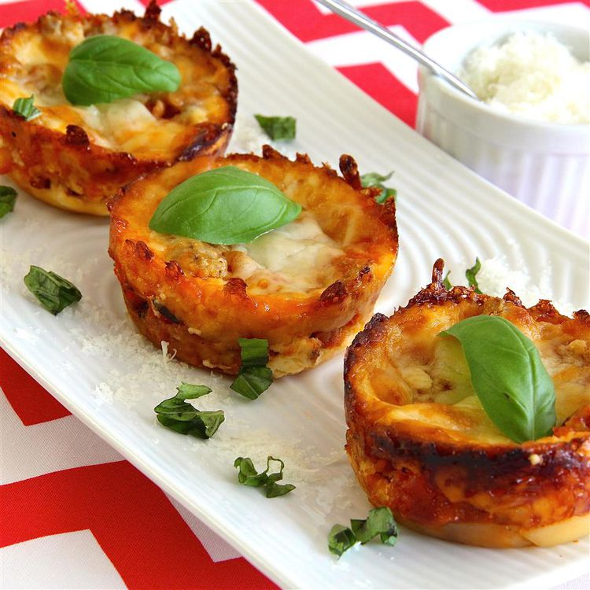

Lasagna Cupcakes

Description
Recipe submitted by Kimberley Piper in Allrecipes
Ingredients
- cooking spray
- ⅓ pound ground beef
- salt and ground black pepper to taste
- 24 wonton wrappers
-
1 ¾ cups grated Parmesan cheese
-
1 ¾ cups shredded mozzarella cheese
-
¾ cup ricotta cheese
- 1 cup pasta sauce
Steps
- Preheat oven to 375 degrees F (190 degrees C). Prepare muffin cups with cooking spray.
- Heat a large skillet over medium-high heat. Cook and stir beef in the hot skillet until browned and crumbly, 5 to 7 minutes; season with salt and pepper. Drain and discard grease from beef.
- Cut wonton wrappers into 2 1/4-inch circles with a biscuit cutter. Press one wonton into the bottom of each muffin cup. Sprinkle even amounts of Parmesan cheese, mozzarella cheese, and ricotta cheese into each muffin cup; top each portion with even amounts of ground beef and pasta sauce.
- Divide 1/2 cup Parmesan cheese, 1/2 cup mozzarella cheese, 1/2 of the ricotta cheese, 1/2 of the ground beef mixture, and 1/2 cup pasta sauce, between the muffin cups and layer, respectively, atop wonton wrapper; repeat layering with remaining wonton wrappers, 1/2 cup Parmesan cheese, 1/2 cup mozzarella cheese, remaining ricotta cheese, remaining ground beef, and remaining pasta sauce. Top "cupcakes" with remaining Parmesan cheese and mozzarella cheese.
- Bake in preheated oven until edges of "cupcakes" are browned, 18 to 20 minutes; let rest in tins for 5 minutes before running a knife around the edges to loosen and remove. Garnish with fresh basil to serve.
Home